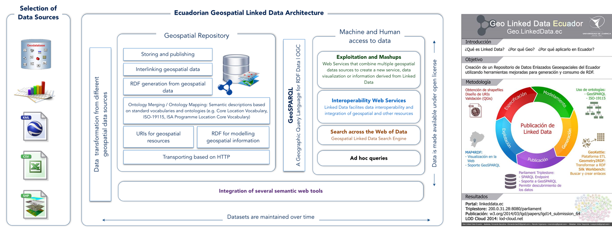

Ultimamente los trabajos relacionados con datos se han enfocado en gran parte hacia los datos geoespaciales y su
combinacion con Linked Data. En este espacio presentamos las actividades, tareas y procesos realizados
para la creación del Repositorio Ecuatoriano de Datos Enlazados Geoespaciales, revisando ciertas
propuestas existentes y tambien ofreciendo soluciones para lograr facilidad de publicación y explotación de los
Datos Enlazados Geoespaciales
La publicación de datos gubernamentales sobre la Web (Linked Open Data) es una importante iniciativa de gobiernos de todo el mundo.
Estas iniciativas se pueden agrupar en dos categorías:
° Creación de repositorios de datos públicos
° Aplicaciones que publiquen datos del gobierno como Datos Enlazados proporcionando servicios como Sparql EndPoint.
En el contexto del dominio geoespacial existe diversos tipos de fuentes de datos como:
° ShapeFiles
° Geo-databases
° CSVs
° Hojas de cálculo Excel
° GML, XML, KML, etc.
Estos formatos represetan informacion de una manera estructurada. Los datos geoespaciales describen geometrías como : puntos, líneas, polígonos y multipolígonos. Varios estudios
han abordado de manera positiva el problema de la generación de RDF a partir de información geoespacial. Una vez que esta información está disponible en formatos
de la Web Semántica, puede ser fácilmente compartida e intercambiada.
Con respecto a las iniciativas geoespaciales de datos enlazados, varios estudios han llevado de manera positiva el problema de la generación de RDF.
GeoLinkedData es una iniciativa para agregar una dimensión espacial a la Web de
Datos. LinkedGeoData utiliza la información recopilada por el OpenStreetMap para hacerla disponible como RDF. Ordnance Survey Linked Data es La agencia nacional de cartografía
de Gran Bretaña. Ordnance Survey publica diferentes tipos de información de sus productos, que pueden ser accesibles a través de un servicio de SPARQL.
El Instituto Nacional de Información de Francia esta
trabajando en la publicación de datos geoespaciales en formato Linked Data . Trentino
Government Linked Open GeoData ha publicado sus datos siguiendo los principios de Linked Data.
Teniendo esto en mente, nuestro objetivo es crear el Repositorio Ecuatoriano de Datos Enlazados Geoespaciales, y representar
las fuentes de datos geoespaciales en RDF. Combinamos las ideas de varias iniciativas, y proponemos un nuevo
entorno de trabajo para hacer frente a la generación e integración de datos geoespaciales. Ademas,
tenemos la intención de utilizar, reutilizar y ampliar las capacidades de las herramientas ETL para la generación de
Linked Data basado en las librerias de generacion de RDF disponibles, pero adaptado al
dominio geoespacial.
Fuente: http://www.w3.org/2014/03/lgd/GeoLinkedDataEC-v3-boris
Arquitectura del Proyecto "Ecuadorian Geospatial Linked Data"

LINKED DATA LIFE CYCLE
Para cumplir con los objetivos mencionados, es importante seguir una metodologia adecuada. Analizando cada uno de los 5 procesos del Ciclo
de Vida de Linked Data y cumpliendo los principio de Linked Data a continuacion se muestra a detalle el desarrollo de
cada uno de los procesos con sus respectivos ejemplos y resultados en videos y tablas que permitan la facil comprension y aplicacion de
la misma para futuros trabajos